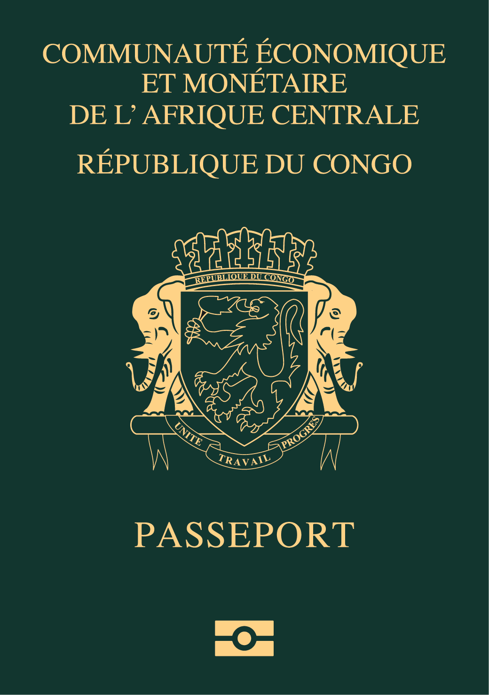

N.B. L’obtention de la carte consulaire est un préalable à toute demande de passeport biométrique CEMAC.
Les ressortissants doivent s’y conformer !
Le passeport biométrique CEMAC est un document de voyage individuel qui certifie l'identité et la nationalité congolaise.
Validité : 5 ans.
⚠️ L'Ambassade du Congo en France ne proroge plus les passeports !
Les ressortissants doivent se connecter au site de l’Ambassade pour accomplir les formalités de demande ou de renouvellement.
👉 S'enregistrer en ligne
👉 Se connecter
Après le paiement en ligne, le ressortissant doit prendre rendez-vous pour les empreintes :
👉 Prendre rendez-vous (du lundi au jeudi uniquement)
Le demandeur est informé par mail ou téléphone de la réception de son passeport.
Le retrait se fait uniquement les vendredis, sur présentation du récépissé.
⚠️ Aucune procuration n’est acceptée, sauf dérogation de l’Ambassadeur.
En cas de difficultés : 📧 contact@ambacongofr.org | ambacongofrance@gmail.com